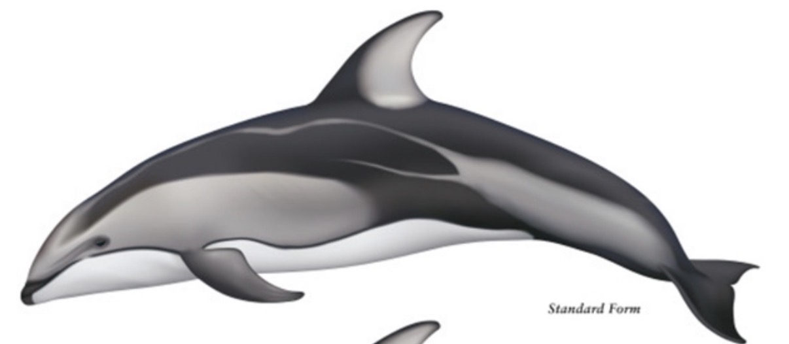
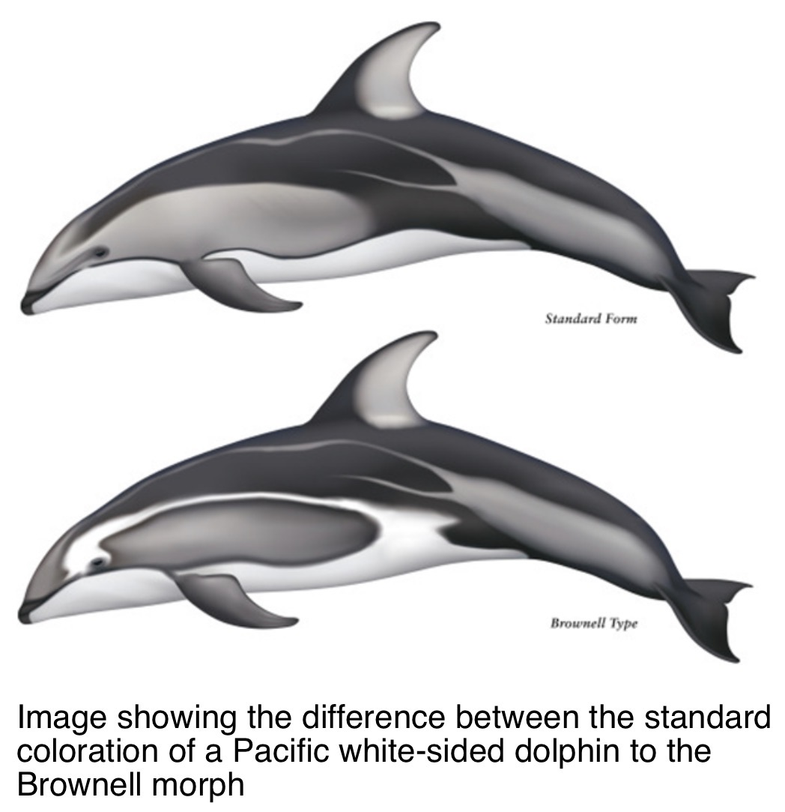
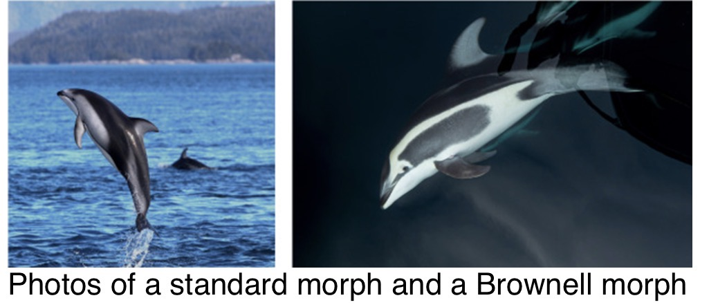
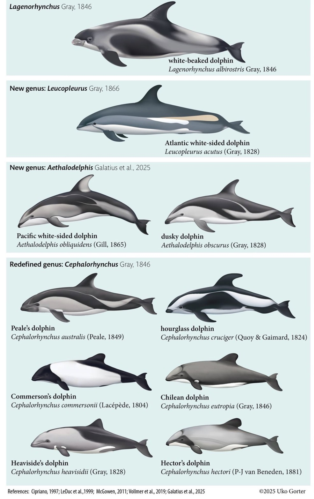
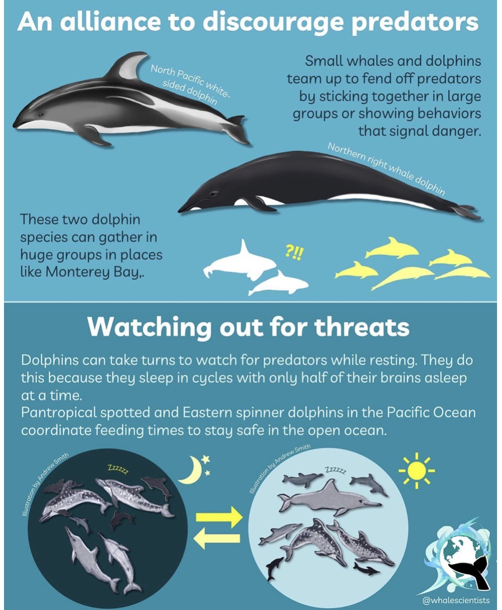

At a glance
Fast, highly social North Pacific dolphins seen year-round in Monterey Bay. They may form temporary superpods with northern right whale dolphins.
Length: 5.5–8 ft · Weight: 175–440 lb · Diet: schooling fish and squid · Predator: orcas · Conservation: Least Concern (source report).
Based on the March 12, 2026 Naturalist shift update. Measurements, stock figures and proposed taxonomy are preserved as reported by the author, not independently reverified.
Standard coloration and Brownell morph
The Brownell morph has a distinctive dark lateral patch framed by a contrasting light stripe. It is a recurring coloration pattern, not albinism.


2025 proposed taxonomic changes
The supplied Galatius et al. (2025) illustration places Pacific white-sided and dusky dolphins in the proposed genus Aethalodelphis. Species names and acceptance can differ across taxonomic authorities.

Range, habitat, prey and diving
Found across the North Pacific from Mexico to East Asia and north to Alaska and Russia, in nearshore and offshore waters. The source lists herring, sardines, anchovies, market squid, whiting, capelin, chub mackerel and other fishes and squid.
Diving caution: The author questions online claims of dives to 3,280 ft and suggests nighttime vertical prey migration as a possible explanation for deepwater prey. A proposed 600–1,000 ft dive range is speculation in the email, not a confirmed limit.
Regional stock and returning pods
The March 2026 author cites approximately 21,000–35,000 animals in the California–Oregon–Washington stock and describes it as stable. Photo-identification suggests pods revisit Monterey Bay, but finer-scale site fidelity needs more study.
Reproduction and calf development
According to the shift update, mating activity is especially evident in late summer and fall; gestation lasts 9–12 months; newborn calves average 3 ft and 30 lb. Weaning generally occurs at 12 months but may extend to 18 months. Females may calve every 2–5 years. The author reports maturity at 8–10 years for females and 10–11 years for males.
Mixed-species associations and superpods
Pacific white-sided dolphins frequently mix with northern right whale dolphins and sometimes other marine mammals. Temporary superpods can exceed 1,000 individuals. Predator avoidance, shared feeding, mating and social benefits are hypotheses rather than settled explanations.

Visitor questions
Why do some look different? A recurring Brownell coloration morph differs from the usual pattern.
Why are two dolphin species together? Possible advantages include safety and feeding, but no single cause is confirmed.
Do these dolphins migrate? The source describes regional movements in response to food rather than long seasonal migrations.